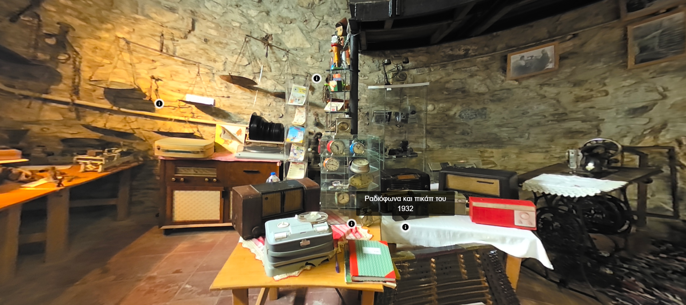
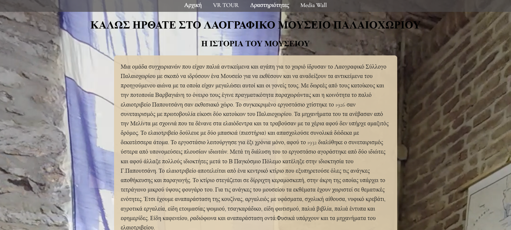
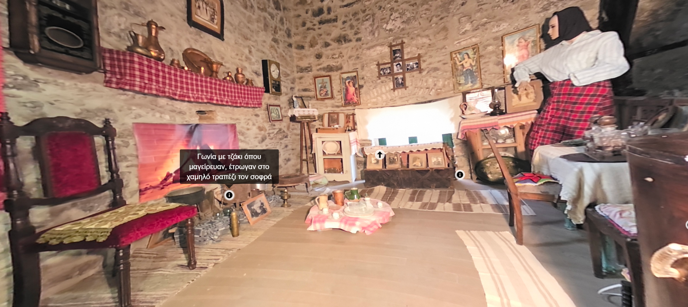
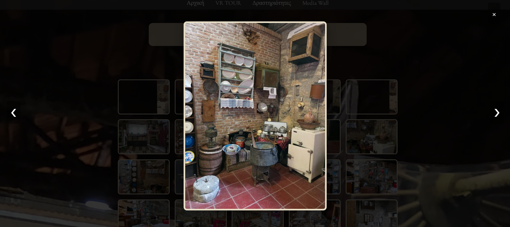
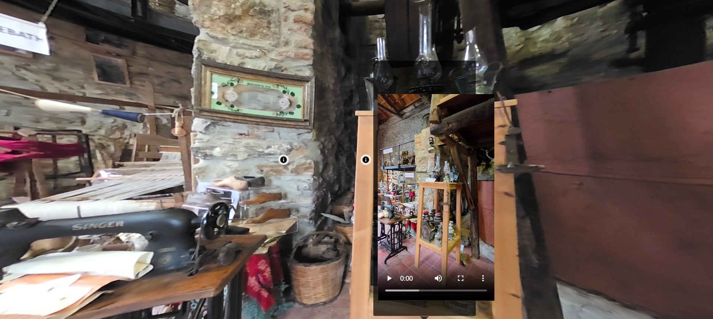

About This Project
This project was made for a local folklore Museum. The website includes an elegant welcome page with historical context, a VR TOUR using 360° scenes where users can explore different rooms interactively, a Media Wall for browsing through photos with zoomable modals and navigation, and a dedicated Δραστηριότητες page (for events/activities, ready for future content).
Key Features:
- ✔ Feature 1: Interactive VR tour using 360° panoramic scenes.
- ✔ Feature 2: Elegant welcome page with historical context and visuals.
- ✔ Feature 3: Image gallery with modal and zoom navigation.
- ✔ Feature 4: Events page structure for future content expansion.
- ✔ Feature 5: Built with Pannellum, Lightbox, HTML/CSS/JS.




